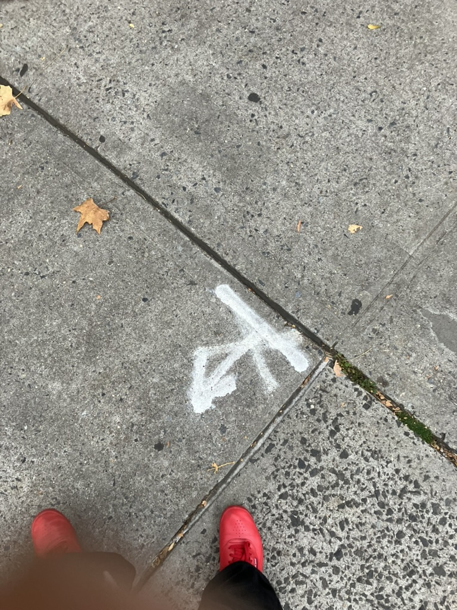

La Matriz
Lead with what you want to preserve or protect.
What we consume, we reproduce. La Matriz is a color practice for choosing how you step into relation with the media and spaces around you.

Semantic Color Math can support you to organize and define relations around your system at whatever stage, to negotiate and enliven your goals and surroundings on your own terms.
I am a language binder: glue code between the normal and the illegible. I borrow data science's tools, like visualization and classification, and bend them toward care.
“In programming and software design, a binding is an application programming interface (API) that provides glue code specifically made to allow a programming language to use a foreign library or operating system service.” — Language binding
How can you make new rules from existing ones?
Spectacle makes us spectators of our own lives. Here you are a participant: you sense the result.

Choose a pathway with repetition to hold an opening when closure threatens.
When color is applied to axioms, we can deduce further relations without having data.
I care about your privacy. My web apps do not collect your data. What you type stays with you.
Place your data where you feel it belongs. Lead with what you want to preserve or protect. Consult with me →